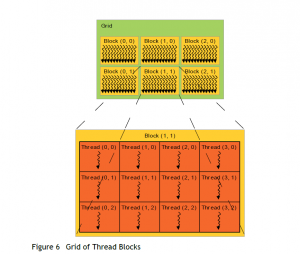
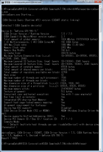

前回はCUDAの性能を改善しましたが、今一歩及ばずというところです。
Introduction
ところで、これまで.NETが一度も出てきていないのにこのタイトルは詐欺なんじゃないですかねぇ(震え声)
Explanation
Tread!thread!!Thread!!!
前回はスレッドを使って大幅に性能を改善しました。 が、それでもCPUが純粋にシーケンシャルで処理する方が速かったです。 CUDAに対する理解が全く足りていないのでもう少し調べてみます。 前回登場した、CUDA_C_Programming_Guide.pdf で、スレッドに関する記述を見てみます。
2.2. Thread Hierarchy For convenience, threadIdx is a 3-component vector, so that threads can be identified using a one-dimensional, two-dimensional, or three-dimensional thread index, forming a one-dimensional, two-dimensional, or three-dimensional block of threads, called a thread block. This provides a natural way to invoke computation across the elements in a domain such as a vector, matrix, or volume.
訳: 2.2. スレッドの階層 便利なことに、threadIdxは3成分のベクトルであり、つまりスレッドは1次元、2次元、3次元のスレッドインデックス、で識別することができ、スレッドブロックと呼ばれる1次元、2次元、3次元のスレッドのブロックを形作る。これは、ベクトル、行列、ボリューム (訳注：ここでいうベクトルは、力学のベクトルではなく、配列のような1次元データで、行列は2次元、ボリュームは3次元という意味) のようなドメイン内の要素を横断する計算を実行するための自然な方法を提供する。 といっています。 ブロックという単語が出てきました、これは前回でも出てきましたが、流しました。 要するに、スレッドはブロックという単位になっていることです。
The index of a thread and its thread ID relate to each other in a straightforward way: For a one-dimensional block, they are the same; for a two-dimensional block of size $$(D_x, D_y)$$ ,the thread ID of a thread of index $$(x, y)$$ is $$(x + y, D_x)$$; for a three-dimensional block of size $$(D_x, D_y, D_x)$$, the thread ID of a thread of index $$(x, y, x)$$ is $$(x + y D_x + z D_x D_y)$$.
訳: スレッドのインデックスとそのスレッドIDは素直なやり方で互いに関連している。1次元のブロックではそれらは同一であり、2次元のブロックのサイズ (Dx, Dy)、スレッドのインデックス (x, y) のスレッドIDは (x + y, Dx); 3次元のブロックのサイズ (Dx, Dy, Dx)、スレッドのインデックス (x, y, z) のスレッドIDは (x + y Dx + z Dx Dy)である。 つまるところ、各ブロックにスレッドが存在するっていってます。
There is a limit to the number of threads per block, since all threads of a block are expected to reside on the same processor core and must share the limited memory resources of that core. On current GPUs, a thread block may contain up to 1024 threads. However, a kernel can be executed by multiple equally-shaped thread blocks, so that the total number of threads is equal to the number of threads per block times the number of blocks. Blocks are organized into a one-dimensional, two-dimensional, or three-dimensional grid of thread blocks as illustrated by Figure 6. The number of thread blocks in a grid is usually dictated by the size of the data being processed or the number of processors in the system, which it can greatly exceed. 
{kind=link}
訳: 1ブロック毎のスレッド数には制限があり、一つのブロックの全スレッドは、プロセッサーコアから予測でき、コアの制限されたメモリリソースを共有しなくてはならない。現在のGPUにて、スレッドブロックは1024スレッドまで内包するかもしれない。しかし、カーネルは複数の同一形状のスレッドブロックで実行され、ゆえにスレッドの合計数はブロックの個数と1ブロックあたりのスレッドの個数の積になる。 ブロックは、Figure 6で図示された、スレッドブロックの1次元、2次元、3次元のグリッドを形作る。1つのグリッド内におけるスレッドブロックの数は通常、処理されるデータのサイズまたはシステムのプロセッサー数から規定される。(訳注：最後のwhichはどこにかかっているのかわかりませんでしたので、最後のwhich以降は無視します)
スレッドの合計数はブロックの個数と1ブロックあたりのスレッドの個数の積
なんか凄いこと書いてあります。 ってか、前回書いた記事で1ブロックあたり最大512スレッド、って書きましたけど、あれは間違い？ 当時のCUDA搭載GPUの最大値なのか？ とりあえず、自分のGPU性能を詳しく知りたい。 第3回 CUDA4.0のインストールによれば、deviceQuery.exe というプログラムが性能を詳しく教えてくれるとのこと。 これはCUDA Toolkitインストール時にコピーされており、デフォルトは。C:\ProgramData\NVIDIA Corporation\CUDA Samples\v7.5\1_Utilities\deviceQuery に入っていると。 とりあえず、自分でビルドして実行 
{kind=link}
結果として、1プロセッサーあたり1536スレッド、1ブロックあたり最大1024スレッド起動できることがわかりました。最大1536スレッドでしょぼくない？と思ったら、上に (4) Multiprocessors ってあるので、全部で1536*4=6144スレッドってこと？ とりあえず可能な限りスレッドを活用するべくコードを修正。 また、スレッド数を活用できるようなカーネルに内容を変更します。 サンプルコードはページの末尾を参照。 変更点は
- ベクトルの和の計算を行列乗算の計算に変更。1000x1000の行列なので$$1000^3$$ の計算
- スレッド数指定
[code lang=”cpp”] const int SIZE = 32; const int MATRIX_SIZE = 1000;
cudaError_t addWithCuda(float *c, const float *a, const float *b);
__global__ void addKernel(float *c, const float *a, const float *b) { int row = blockIdx.y * blockDim.y + threadIdx.y; int col = blockIdx.x * blockDim.x + threadIdx.x;
if (row < MATRIX_SIZE && col < MATRIX_SIZE) { auto v = 0.f; for (auto x = 0; x < MATRIX_SIZE; x++) { v += a[row * MATRIX_SIZE + x] * b[x * MATRIX_SIZE + col]; }
c[row * MATRIX_SIZE + col] = v; } } [/code] こんな感じ。 ホスト側は省略。 結果は [code lang=”sh”] threadsPerBlock.X =32, threadsPerBlock.y = 32 numBlocks.X =32, numBlocks.y = 32 CUDA is time = {117} No CUDA is time = {7076} [/code] やりました。60倍のパフォーマンスをたたき出しています。
Conclusion
そもそもの原因として、CUDAの得意領域に持ち込んでいなかったのが問題でした。 如何にスレッドを有効活用するか、というところに主眼をおいて実装を進める必要があります。